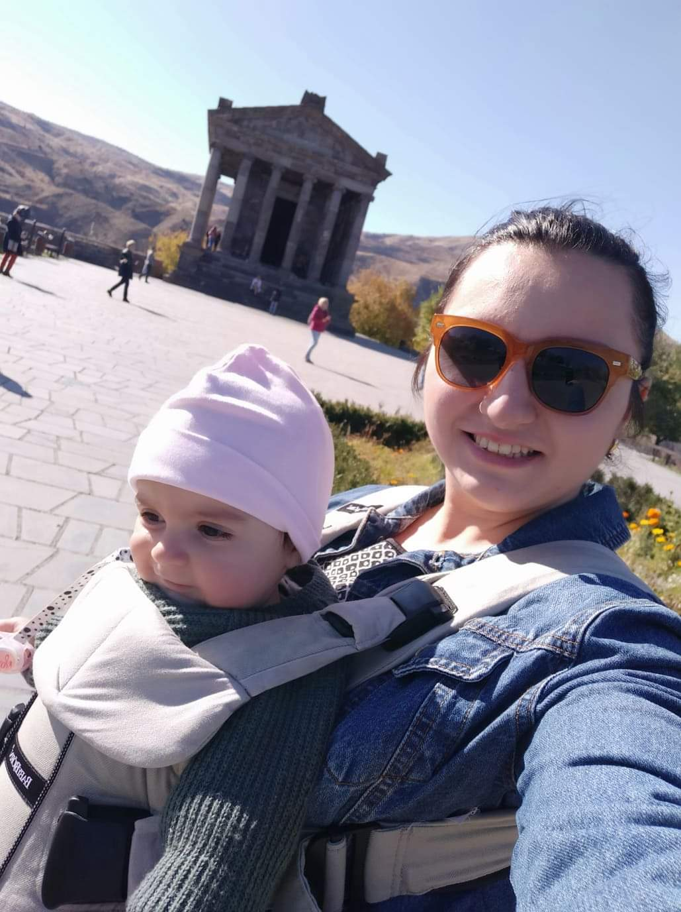

Jag är född i 1993 i Yerevan och är uppväxt i Armenien. Jag flyttade till Italien när jag var tretton år gammal och bodde där för 3 år. Därefter flyttade jag till Sverige och bor här fortfarande. Mina syskon bor i Stockholm, och där bor även mina föräldrar. Jag är gift och har en dotter som är 20 månader gammal, och hon går i förskolan. Hon heter Silva och är en liten glad tjej. Min make jobbar som lärarassistent på Glimåkra folkhögskolan. Jag har börjad studera programmet webutvecklare på Glimåkra folkhögskolan. Jag tycker om nya utmaningar och det verkar som utbildningen är rätt för mig. Jag har tidigare studerad på Malmö Högskola i programmet Europastudier.
"Räkna din ålder i vänner och minnen, inte i år"